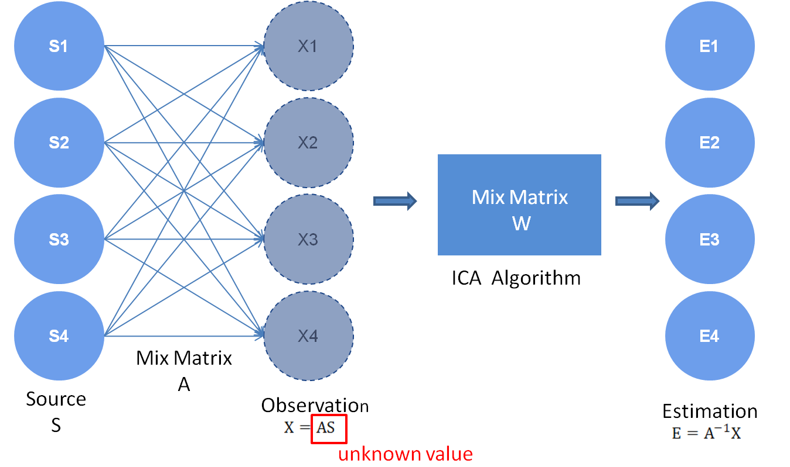
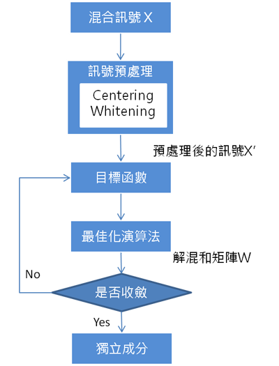

Cocktail-Party Problem
- 研究ICA前，可以先了解一下這個問題。主要起源於心理學研究，指的是人類在吵嘈的環境中，可以專注於某一個人的談話或專注於某一個聲音而忽略其他背景聲音，用來解釋人類的「聽力選擇能力」。
- 為了讓電腦也有類似「聽力選擇能力」的能力，就有搭配統計學發展出來的獨立成份分析(ICA)。換個方式說，希望能從複雜混合的混音環境，分析出原來的各個獨立聲音。
Basic Theorem

- 假設來源訊號是互相獨立的，就能將原始訊號從混合訊號中良好的分離出來。
- 因此必須以輸出訊號之間互為獨立為目標，並且定義出公式化與量化的目標函數(Cost Function)
- ICA的Cost Function是測量獨立成分的指標，為了使得分離效果良好，目標函數必須具備下列性質 :
- Consistency : 無論初始值為何，解混合矩陣之逆矩陣W都必須收斂在同一點上。
- Robustness : 解混合矩陣之逆矩陣W不能受到外在因素的干擾，而發生錯誤。
- 有了目標函數後，利用最佳化演算法套用於目標函數上，找出目標函數的最佳解來達成獨立成分的分離，而對於最佳化演算法必須考量下列性質:
- 收斂的收度(Convergence Speed)
- 記憶體的需求(Memory Requirements)
- 數值的穩定度(Numerical Stability)
- 但這演算法必須要下列這些限制:
- 所有的原始訊號Si必須具備統計上獨立的特性
- 所有的原始訊號Si必須為非高斯分佈 (這一項可參考中央極限定理(Central Limit Theorem))
- 觀測到的線性混合訊號Xm數量至少要大於或等於獨立成分Sn的數量(m≧n)
- 解方程重點 : 訊號分離最重要的就是解混合矩陣W要與原來的混合矩陣之逆矩陣A-1的相近程度
- Pre-Processing : 目的是要從混合訊號中找出有用的資訊或將混合訊號轉換成有意義的形式，以取得更多的資訊來估算出獨立的成分，藉由訊號的預處理把盲訊號分離這個複雜的問題變得更簡易些。( 對訊號進行置中化(Centering)與白色化(Whitening) )
Implment Method

Centering
目的
置中化(Centering)是將混合訊號轉換成零均值(Zero-Mean)的訊號
做法
經過置中化處理後的訊號其平均值為零(Zero-Mean)，而處理後的訊號並不會損失其訊號的特性，假設混合訊號為X，則置中化的定義如下所示: $$X’ = X - E[X]$$ $$E[X]: Mean Value$$
混合訊號即使在執行置中化後，依然保持不變，在進行演算法之前，對原始信號假設為零均值的訊號，可以加快獨立成分分析法的執行速度。
Whitening
目的
白色化(Whitening)是將混合訊號從自相關(Correlated)的特性轉換成非相關(Uncorrelated)的訊號，經由這些處理後，可使獨立成分分析法的處理複雜度降低不少。
以統計學的觀點來看，若隨機向量的隨機變數符合非相關(Uncorrelated)的條件，且其共變異矩陣(Covariance Matrix)為單位矩陣I，則稱白色化(Whitening)。
做法
接在Centering之後
- 先定義Cx為Centering後的混合訊號之Covariance Matrix $$ E[X’X’^T]=C_x $$
接著因為要使混合訊號從相關的訊號轉變成非相關的訊號，經常利用主成分分析法(Principal Component Analysis, PCA)進行轉換。為了取得非相關的訊號，因此將主成分分析法對置中化後的混合訊號之Covariance Matrix Cx進行特徵值拆解(Eigenvalue Decomposition, EVD)，以取得其特徵值(Eigenvalue)與特徵向量(Eigenvector)所組成的矩陣。 $$ C_x=EDE^T $$ 其中E為特徵向量組成的單位正交矩陣(Unit Orthogonal Matrix)。 $$ E^TE = EE^T = I $$ D為Cx的特徵值，由d1,d2,…,dn所組成的對角矩陣(Diagonal Matrix)
利用一個白化矩陣(Whitening Matrix)V與置中化之混和訊號進行線性轉換，得到白色化的特性。 $$ \bar{X} = VX’ $$ 其中 $$ \bar{X} $$ 為白色化後的訊號，而白化矩陣V之定義，如下所示 $$ V=ED^{-\frac{1}{2}}E^T$$
目標函數 & 最佳化方法
在ICA的方法中，通常會先定義一個目標函數(Objective Function)，然後對此目標函數算最大值或最小值。而在目標函數的定義上，我們必須定義一個可以藉由最大值或最小值得到的獨立元素(Independent Component)，因此可以將ICA演算法分成兩部分。 $$ ICA Method = ObjectFunction + Optimization Algorithm $$ 其中，目標函數的選擇決定演算法Robustness，最佳化演算法決定了收斂速度。